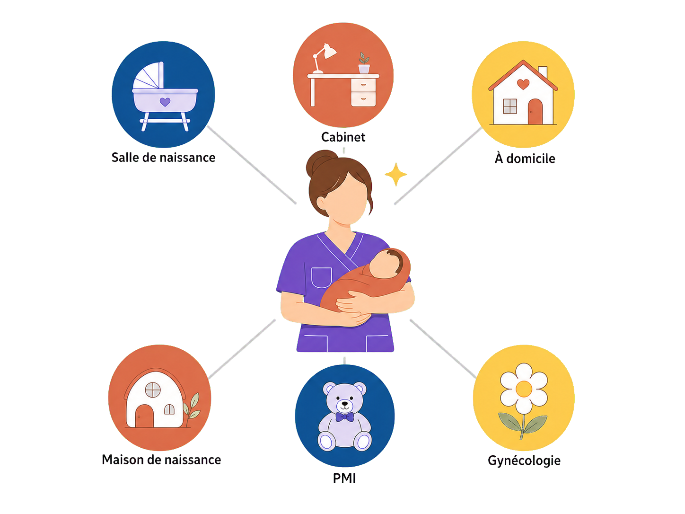
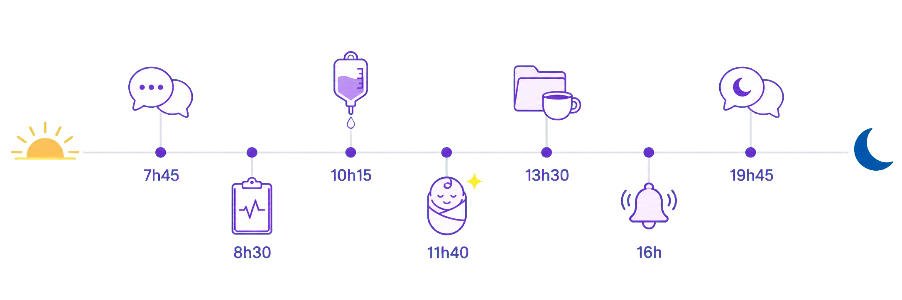
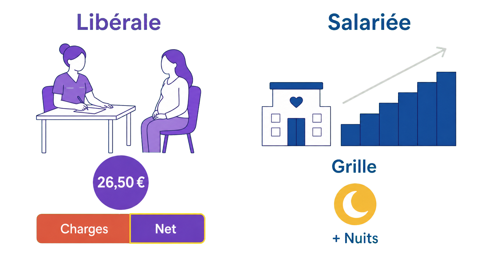
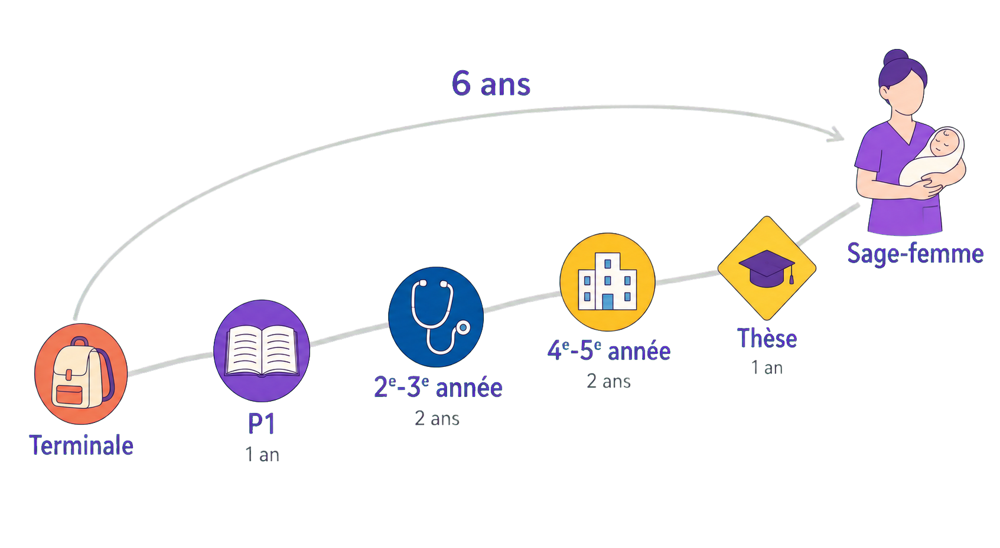
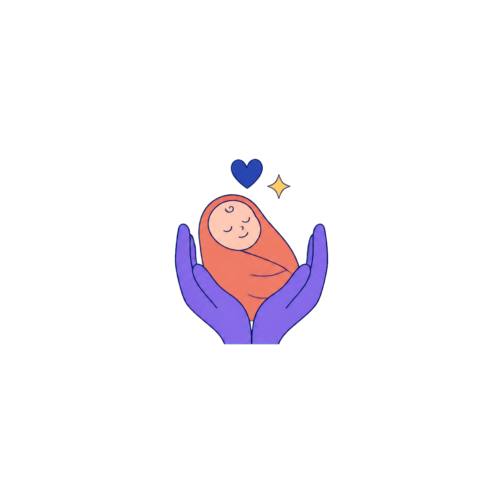

Sage-femme : le métier en vrai
Plus d'1 bébé sur 2 en France vient au monde entre les mains d'une sage-femme — pas d'un médecin.
Consulter, prescrire, échographier, accoucher : une des trois professions médicales de France — et un titre de docteur au bout de 6 ans.

à placer dans : /public/images/metiers/
Illustration paysage 4:3 SANS fond (PNG transparent) : une sage-femme au centre, un nouveau-né dans les bras, entourée de six pastilles pictogrammes (salle de naissance, cabinet, à domicile, maison de naissance, PMI, gynécologie).
Mettre un enfant au monde, être la toute première personne sur Terre à le tenir : peu de métiers offrent des moments aussi forts, aussi souvent. Mais l'image qu'on s'en fait est trop étroite : la sage-femme est une profession médicale à part entière — l'une des trois de France, avec le médecin et le chirurgien-dentiste — qui consulte, prescrit, suit les grossesses de A à Z et pratique en autonomie complète les accouchements normaux, du premier examen au premier cri. C'est aussi un métier de sang-froid : la naissance est une discipline d'urgence, où l'on décide vite et en équipe. Sur cette fiche, on te montre le quotidien réel — gardes, tarifs, grilles, chemin d'études — pour que tu puisses te projeter les yeux ouverts.
Ta journée si tu deviens sage-femme
- 1 7h45 — Transmissions. L'équipe de nuit te raconte chaque patiente : qui est en travail, qui a accouché à 3 h du matin, qui a besoin d'un œil attentif. En salle de naissance, tout commence par l'écoute.
- 2 8h30 — Tour des salles. Tu examines une patiente en travail, tu poses le monitoring (l'appareil qui enregistre le cœur du bébé et les contractions), tu rassures le couple. C'est toi qui pilotes.
- 3 10h15 — La péridurale. Une patiente n'en peut plus : tu évalues, tu appelles l'anesthésiste (8 femmes sur 10 accouchent sous péridurale) et tu restes près d'elle pendant la pose.
- 4 11h40 — Une naissance. C'est toi qui accouches la patiente, du dernier effort au premier cri. Premiers soins au nouveau-né, première mise au sein : ces minutes-là ne ressemblent à aucun autre métier.
- 5 13h30 — Dossiers, repas express. Tout se trace : examens, heures, décisions. Tu manges vite — deux patientes sont en travail en même temps.
- 6 16h — Ça s'accélère. Une maman saigne plus que la normale après son accouchement : tu déclenches le protocole, l'obstétricien arrive, chacun connaît son rôle. Garder son calme, c'est le cœur du métier — et ça s'apprend.
- 7 19h45 — Transmissions du soir. Tu passes le relais à l'équipe de nuit, patiente par patiente. Douze heures dans les jambes, des vies plein la tête — et demain, repos.

à placer dans : /public/images/metiers/
Bandeau très large et fin SANS fond (PNG transparent) : ligne du temps soleil → lune, sept petits pictogrammes horodatés d'une garde de 12 h, aucun mot en dehors des heures.
Où tu peux exercer
- 1 Salariée à l'hôpital — le cœur du métier. Plus d'une sage-femme sur deux (54 %) travaille en maternité : salle de naissance, suites de couches, grossesses à risque — avec l'obstétricien, l'anesthésiste et le pédiatre à portée de voix. Salaire fixe, plateau technique, intensité. En échange : des postes de 12 h, nuits, week-ends et jours fériés compris — un temps plein tourne à 35 h en moyenne, soit environ 11 à 12 gardes de 12 h par mois.
- 2 Libérale — ton cabinet, tes patientes. En cabinet ou en maison de santé : suivi de grossesse, préparation à la naissance, visites à domicile après l'accouchement, rééducation, gynécologie de prévention. Une patientèle qui te suit, une vraie liberté d'agenda — mais pas d'accouchements (sauf en maison de naissance), pas de congés payés, et un rythme que tu fixes toi-même : tes consultations, tes jours travaillés, tes visites à domicile. Environ une sage-femme sur trois exerce en libéral, seule ou en cabinet de groupe.
- 3 PMI, clinique, mixte — les autres visages. En PMI (Protection maternelle et infantile, le service public qui suit gratuitement mamans et jeunes enfants), tu fais de la prévention en horaires de bureau, ≈ 35-39 h par semaine. En clinique privée, tu retrouves la salle de naissance sous contrat de droit privé. Et beaucoup panachent : cabinet en semaine, gardes à l'hôpital le week-end. Environ 10 % de la profession.
Combien tu gagnes — et comment
- 1 À l'hôpital : une grille + des primes + les nuits. Fonctionnaire hospitalière, payée sur une grille nationale à 2 grades de 10 échelons, gravie à l'ancienneté. En début de carrière : ≈ 2 300 € net par mois primes fixes incluses (complément Ségur 241 € brut, soit ≈ 192 € net + prime d'exercice médical 265 € brut, ≈ 240 € net), pour ≈ 35 h par semaine en postes de 12 h. Les nuits (majorées à 25 % du taux horaire depuis le 1ᵉʳ janvier 2024), dimanches et fériés ajoutent souvent 200 à 400 € par mois. Au sommet : ≈ 3 800 € net — la grille complète est dans le livret.
- 2 En libéral : payée à l'acte, aux tarifs de l'Assurance Maladie. Chaque acte a son tarif fixé par la convention : 26,50 € la consultation (le généraliste est à 30 € — la profession réclame l'alignement), 24 € la séance de rééducation périnéale, ≈ 63 € la visite à domicile après l'accouchement, déplacement compris. Mais honoraires ≠ revenu : 40 à 50 % partent en charges. Selon le rythme, compte ≈ 2 500 à 4 500 € net avant impôt — pour des semaines de 35 à 50 h. La simulation détaillée est dans le livret.
- 3 Et pendant les études ? À partir de la 4ᵉ année, tu deviens agent public de l'hôpital : ≈ 273 € brut par mois en 4ᵉ année, ≈ 336 € en 5ᵉ (un statut d'étudiant hospitalier, comme les externes de médecine — symbolique, mais avec congés payés et protection sociale), pour des semaines déjà bien remplies entre cours et stages. Et les études coûtent peu : l'université publique, ≈ 180 € d'inscription par an. Le détail année par année est dans le livret.
📖 L'argent pendant les études, année par année›
Pas d'école privée à payer : la maïeutique est une filière universitaire publique. Et à partir de la 4ᵉ année, c'est l'hôpital qui te paie :
| Année | Ce que tu touches | Le détail |
|---|---|---|
| P1 (PASS ou LAS) | 0 € | tu paies l'inscription universitaire ≈ 175-180 € + la CVEC ≈ 105 € (contribution vie étudiante) |
| 2ᵉ et 3ᵉ années | 0 € | droits universitaires classiques ; premiers stages (non rémunérés) ; bourses possibles — Crous ou Région selon le statut de l'école |
| 4ᵉ année | 3 277,64 € brut / an ≈ 273 € / mois | statut d'étudiant hospitalier, agent public : congés payés, arrêts maladie, congé maternité |
| 5ᵉ année | 4 034,20 € brut / an ≈ 336 € / mois | même statut + long stage pré-professionnel en fin d'année |
| 6ᵉ année (dès 2028-2029) | à fixer | la rémunération du tout nouveau 3ᵉ cycle n'était pas encore publiée à l'été 2026 — les premières promotions y arriveront en 2028-2029 |
Montants fixés par l'arrêté du 7 octobre 2016 modifié — dernière revalorisation par l'arrêté du 6 juillet 2023, en vigueur en 2026. Selon les villes, l'école est encore « hospitalière » (bourses versées par la Région, pas par le Crous) ; la loi du 25 janvier 2023 prévoit l'intégration de toutes les écoles à l'université d'ici septembre 2027.
⏱️ En face : des semaines déjà denses — cours + stages à l'hôpital, gardes de stage comprises, dès la 2ᵉ année.
📖 La grille hospitalière complète — 2 grades, 20 échelons›
La sage-femme hospitalière est fonctionnaire : son salaire suit une grille nationale à 2 grades de 10 échelons. Voici la grille en vigueur (relevée en janvier 2026), et le net estimé une fois ajoutées les deux primes fixes du métier :
| Échelon | Durée | Brut mensuel (grille seule) | ≈ net / mois, primes incluses |
|---|---|---|---|
| 1ᵉʳ grade — éch. 1 | 1 an 6 mois | 2 289,09 € | ≈ 2 300 € |
| Échelon 2 | 2 ans | 2 422,01 € | ≈ 2 400 € |
| Échelon 3 | 2 ans | 2 535,23 € | ≈ 2 500 € |
| Échelon 4 | 2 ans | 2 628,77 € | ≈ 2 580 € |
| Échelon 5 | 3 ans | 2 737,07 € | ≈ 2 670 € |
| Échelon 6 | 3 ans | 2 860,14 € | ≈ 2 770 € |
| Échelon 7 | 3 ans | 3 002,90 € | ≈ 2 880 € |
| Échelon 8 | 4 ans | 3 185,04 € | ≈ 3 030 € |
| Échelon 9 | 4 ans | 3 352,42 € | ≈ 3 170 € |
| Échelon 10 | dernier | 3 559,17 € | ≈ 3 340 € |
| 2ᵉ grade (second grade) — par avancement | |||
| Échelon 1 | 1 an 6 mois | 2 796,14 € | ≈ 2 720 € |
| Échelon 5 | 3 ans | 3 411,49 € | ≈ 3 220 € |
| Échelon 10 | dernier | 4 110,52 € | ≈ 3 790 € |
Grille indiciaire des sages-femmes des hôpitaux (fonction publique hospitalière), valeur du point 4,92278 €, relevée en janvier 2026. ≈ net / mois : estimation prudente avant impôt — traitement brut moins les cotisations, plus les deux primes fixes versées en net : complément Ségur 241 € brut (≈ 192 € net) et prime d'exercice médical 240 € (décret n° 2022-260 du 25 février 2022). S'ajoutent encore, selon les postes : l'indemnité spécifique (figée sur l'indice détenu au 30 septembre 2021), les nuits (majorées à 25 % du taux horaire depuis le 1ᵉʳ janvier 2024), les dimanches et fériés (60 € l'indemnité forfaitaire) : souvent + 200 à 400 € par mois.
⏱️ Le temps de travail en face : temps plein = 35 h en moyenne, en postes de 12 h incluant nuits, week-ends et fériés (≈ 11-12 gardes par mois). Compte ≈ 25 ans pour atteindre le 10ᵉ échelon du 1ᵉʳ grade.
📖 Le libéral n'a pas de grille : la simulation›
Hypothèses : cabinet conventionné (tarifs Assurance Maladie, sans dépassement), 4,5 jours par semaine, 45 semaines par an (les congés ne sont pas payés), panier moyen ≈ 28 € par acte (consultation 26,50 €, rééducation périnéale 24 €, visite à domicile 62,80 € déplacement compris, séances collectives 19,20 € par personne), charges ≈ 45 % (fourchette réelle : 40 à 50 %).
| Rythme | Honoraires / mois | ≈ net avant impôt |
|---|---|---|
| 12 actes / jour (semaine ≈ 35 h) | ≈ 5 650 € | ≈ 3 100 € |
| 16 actes / jour (semaine ≈ 42 h) | ≈ 7 550 € | ≈ 4 150 € |
| 20 actes / jour (semaine ≈ 50 h) | ≈ 9 450 € | ≈ 5 200 € |
Tarifs réels affichés par un cabinet parisien au 23 février 2026, conformes à la convention nationale (en vigueur depuis le 1ᵉʳ janvier 2025 : lettre-clé SF portée à 3,20 €, consultation 23 € + majoration sage-femme 3,50 € ; la visite à domicile après l'accouchement inclut la majoration de déplacement de 10 € créée par l'avenant 7). Garde les pieds sur terre : un agenda n'est jamais rempli à 100 %, les trajets et l'administratif ne sont pas payés, et beaucoup choisissent un rythme partiel — les revenus réellement observés se situent plus souvent entre 2 500 et 4 500 € net / mois. La dernière grande mesure nationale (DREES) donnait ≈ 32 000 € net par an en 2014, avant les revalorisations de l'avenant 7 signé en 2023 (+ 61 millions d'euros d'honoraires sur deux ans pour la profession).
⏱️ Les heures indiquées incluent soins, trajets à domicile et paperasse — et la disponibilité téléphonique s'ajoute.

à placer dans : /public/images/metiers/
Petite illustration SANS fond (PNG transparent) : scène libérale (patiente → 26,50 € → barre charges/net) à gauche, scène salariée (escalier de grille + pastille nuits) à droite.
Le chemin depuis la Terminale

à placer dans : /public/images/metiers/
Bandeau SANS fond (PNG transparent) : chemin montant à cinq jalons avec durées, losange thèse, silhouette finale de sage-femme, arc « 6 ans » au-dessus.
- 1 Terminale — Parcoursup. Tu formules tes vœux vers les études de santé (PASS ou LAS). Un dossier régulier et des spécialités scientifiques (SVT, physique-chimie) sont tes meilleurs alliés.
- 2 La P1 (voies PASS ou LAS) — 1 an. L'année d'entrée, commune avec les futurs médecins, dentistes et pharmaciens : un classement décide de ta place — environ 1 000 places de maïeutique par an dans toute la France. Ce n'est pas réservé aux génies : ceux qui décrochent leur place sont très souvent ceux qui arrivent avec une vraie méthode de travail dès les premières semaines.
- 3 2ᵉ et 3ᵉ années — 2 ans. Bienvenue à l'école de maïeutique : des promotions à taille humaine — souvent 25 à 40 étudiants selon les villes — où tout le monde se connaît. Sciences du corps, obstétrique, gynécologie… et déjà des stages — la salle de naissance, tu y entres très tôt. Fin du 1ᵉʳ cycle : le DFGSMa (le diplôme de niveau licence de la filière).
- 4 4ᵉ et 5ᵉ années — 2 ans. Le 2ᵉ cycle : tu deviens agent public rémunéré, les stages s'intensifient et tu pratiques déjà des accouchements, toujours encadrée. La 5ᵉ année se conclut par un long stage pré-professionnel.
- 5 La 6ᵉ année — 1 an, la nouveauté. Le 3ᵉ cycle créé en 2024 : approfondissements, construction du projet professionnel et thèse d'exercice. Tu sors docteur(e) en maïeutique.
- 6 Ton premier poste. Le plus souvent en salle de naissance d'une maternité — l'emploi est quasi assuré, les maternités recrutent. Le libéral, la PMI, la clinique ou l'exercice mixte viennent souvent après quelques années d'hôpital.
Deux chantiers bougent autour de ce métier. Les études viennent de passer de 5 à 6 ans : le décret du 3 juillet 2024 crée un 3ᵉ cycle d'un an conclu par une thèse — si tu entres en P1 à la rentrée 2026 ou après, tu es concerné(e) et tu sortiras docteur(e) en maïeutique (les toutes premières 6ᵉ années ouvriront en 2028-2029). Côté admission, une « licence santé » unique a été annoncée en avril 2026 pour remplacer le PASS et la LAS, visée pour la rentrée 2027 — le calendrier peut encore bouger. Quel que soit son nom, la première année restera classante — la méthode de travail restera le nerf de la guerre.

à placer dans : /public/images/metiers/
Mini-illustration SANS fond (PNG transparent) : deux mains berçant un nouveau-né emmailloté, un petit cœur. Aucun texte.